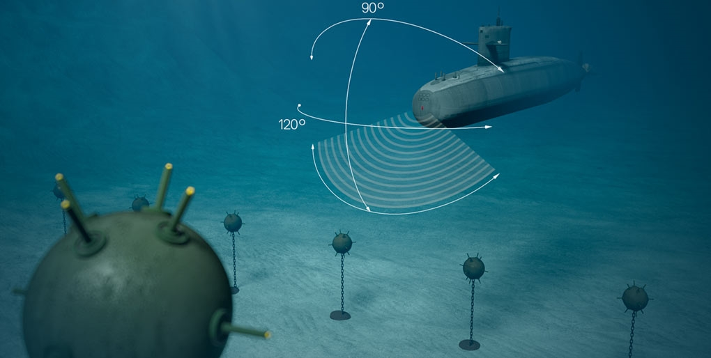

Technology/Topic
What is Sonar System?
- By emitting sound and measuring the return after being reflected, sonar system is a type of technique that uses sound to navigate and detect certain types of objects under water. Active and passive sonar are both forms of sonar. They involve a receiver and a sound projector. Similarly, a sound is projected by the projector, and a reflection is waited for by the receiver. An ultrasound system uses a piezoelectric transducer to transmit sound. Transducers act like electric power supplies as they generate sound waves and vibrations when activated. Overall, Sonar is a propagation method used to communicate under and below the surface. (Britannica, 2019). It is most common for sonar to be used under water as from the data it gets, it develops nautical charts and locates underwater hazards, search for maps and objects on the seafloor.
What are the types of Sonar?
There are two types of Sonar that is commonly used. One being "passive" and the other, "active".
- Passive: Sonars without transmission capability are known as passive sonar. For example, sumbarines are known to use it to detect noise that is generated by the machinery that is connect to them manually. When being echoed, the echo expands under the sea and by using that echo, it can determine the depth of the water and scan things under it. However, it cannot emmit any signals but instead it can detect acoustic signals from their exeternal sources.
- Active: The opposite of passive sonar is active sonar. Active sonar uses transmittion and receiving equiptment. Beside emitting the pulses of sound and listening for echoes, the bot itself can also submerge into objects, measure water depth and bottom contour as well as it can also detect underwater obstacles to locate marine mammals, assist in navigation as well as search for ships. However, nowadays, active sonar is commonly used rather than passive because there is a variety of things in active sonar than passive (Gold, 2021).
How can it be used for other things?
- Mine: Besides detecting sounds on the bottom of the ocean, sonar can also be utilized in the mining industry (such as detecting mines, acoustic mines), and in homing torpedoes with acoustic signals. There are non-military applications of sonar as well, such as catching fish, mapping the bottom of the sea, and locating divers. Consequently, the mine can be easily detected, and sonar images are commonly used for detecting underwater obstacles. Sonar images are also affordable and provide high performance. The issue of ship noise has led to the use of towed sonar nowadays. Nevertheless, as a result of absorption and scattering phenomena in the underwater medium, the light used to illuminate the target scene is affected. The visibility range is limited to a few meters, thus limiting the use of video cameras. As underwater images have a weak contrast, edge detection methods are limited in their effectiveness due to the need for preprocessing. Sonar is widely used for detecting underwater mines and in a number of other applications, despite all these drawbacks. (Vinutha, 2018).
- Fishing: It is quite common for fishermen to use sonar to find schools of fish, and to measure the depth of the ocean and its temperature, so if it's too cold or too hot, they will know that there won't be any fish. They use these readings to determine where to drop their nets. Additionally, it can detect and display all angles of fish distribution, density, and movement. As the sonar beam is above the fish, it curves downward as the arched marks appear within the char display graphs, indicating a change in distance to the fisherman.(Allphin).
